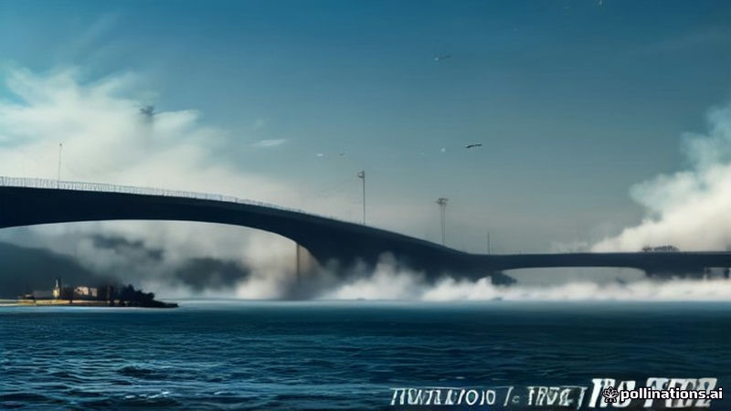

ইউক্রেন ড্রোন ও ক্ষেপণাস্ত্র দিয়ে ক্রিমিয়ার দিকে রাশিয়ার গুরুত্বপূর্ণ সেতুতে আঘাত
France 24, NPR World · 2026-11-17
AI-generated illustrationইউক্রেন বলছে ড্রোন ও ক্ষেপণাস্ত্র দিয়ে রাশিয়া-অধিগ্রহণকৃত ক্রিমিয়ার সেতুতে আঘাত, আর রাশিয়া বহু ড্রোন ধ্বংস ও কিয়েভের সেতুতে হামলা জানিয়েছে।
ইউক্রেনের প্রেসিডেন্ট ভ্লাদিমির জেলেনস্কি মঙ্গলবার জানিয়েছেন যে ড্রোন ও ক্ষেপণাস্ত্র ব্যবহার করে রাশিয়ার ক্রিমিয়ার দখলকৃত উপদ্বীপের সাথে যুক্ত গুরুত্বপূর্ণ রেল ও সড়ক সেতুতে আক্রমণ করা হয়েছে। তিনি এটিকে অপ্রতিদ্বন্দ্বী অপারেশন বলে উল্লেখ করেন এবং জানান এটি কয়েক সপ্তাহের প্রস্তুতির ফল।
রাশিয়ান কর্তৃপক্ষ জানিয়েছে যে তাদের বাহিনী ধারাবাহিকভাবে ইউক্রেনীয় ড্রোনের রেকর্ড সংখ্যক ধ্বংস করেছে এবং রাশিয়া কিয়েভের দুইটি বড় সেতুতে আঘাত হানে। কিয়েভের সেতুগুলোর ওপর হামলা রাশিয়ান কর্মকর্তাদের মতে বড় আকারের ছিল।
Written by AI from facts reported by the outlets named above. It may contain errors; check the original reporting.English version
Ukraine hits key Russian bridge to Crimea with drones and missiles
Ukrainian President Volodymyr Zelensky said on Tuesday that drones and missiles attacked a vital rail and road bridge connecting Russia to the occupied Crimean Peninsula. He described the operation as unprecedented and noted it had been prepared over several weeks.
Russian authorities said their forces shot down a record number of Ukrainian drones for the second consecutive day and that Russia responded by striking two major bridges in Kyiv. The strikes on Kyiv's bridges were described as major by Russian officials.